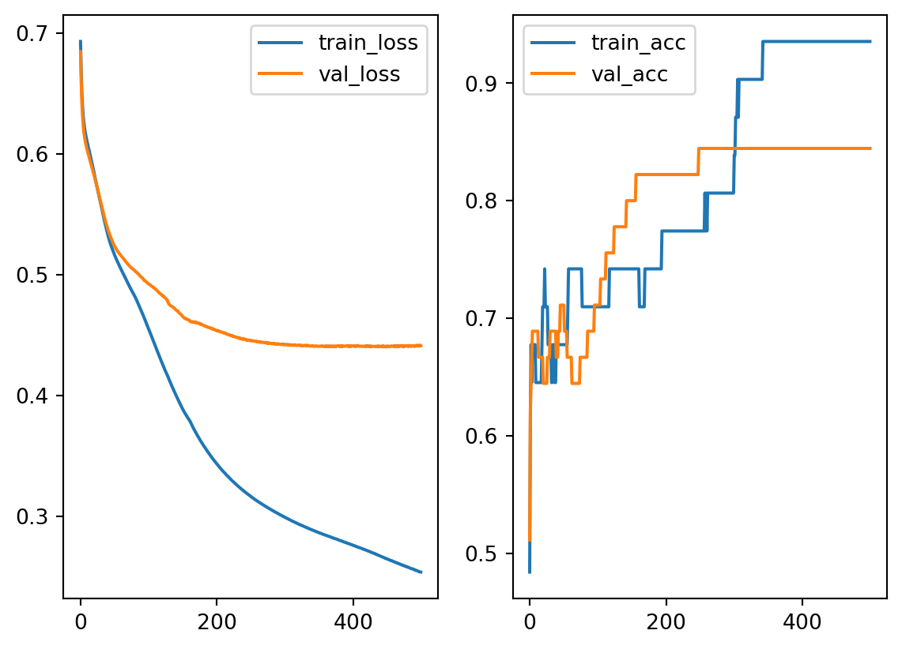

import pandas as pd
import numpy as np
url = 'http://archive.ics.uci.edu/ml/machine-learning-databases/horse-colic/horse-colic.data'
df = pd.read_csv(url, sep=r'\s+', header=None)
df = df.replace("?", np.NaN)
df = df.fillna(0)
df = df.drop(columns=[2, 24, 25, 26, 27])
df[23] = df[23].replace({1: 1, 2: 0})
X = df.iloc[:, :-1].to_numpy().astype(float)
y = df[23].to_numpy().astype(int)
from sklearn.model_selection import train_test_split
X_train, X_test, y_train, y_test = train_test_split(X, y, test_size=0.15, random_state=42)
from sklearn.preprocessing import MinMaxScaler
mms = MinMaxScaler()
mms.fit(X_train)
X_train = mms.transform(X_train)
X_test = mms.transform(X_test)Example
Let us take some of our old dataset as an example. This is an continuation of the horse colic dataset from Logistic regression. Note that most of the codes are directly taken from logistic regression section, since MLP is just a generalization of logistic regression.
The data is feed into the dataloader. Note that we change set the batch size of the test dataloader to be the whole set, since I don’t want to do batch evaluation. This can be modified accordingly.
import torch
from torch.utils.data import Dataset, DataLoader
class MyDataset(Dataset):
def __init__(self, X, y):
self.X = torch.tensor(X, dtype=torch.float32)
self.y = torch.tensor(y, dtype=torch.float32).view(-1, 1)
def __len__(self):
return self.X.shape[0]
def __getitem__(self, idx):
return (self.X[idx], self.y[idx])
trainloader = DataLoader(MyDataset(X_train, y_train), batch_size =32)
testloader = DataLoader(MyDataset(X_test, y_test), batch_size=X_test.shape[0])Now we build a neural network. This is a 2-layer model, with 1 hidden layer with 10 nodes. Since we are going to use BCEWithLogitsLoss, we don’t add the final activation function here in the model, but leave it to the loss function.
import torch.nn as nn
class MyModel(nn.Module):
def __init__(self, num_inputs):
super().__init__()
self.linear1 = nn.Linear(num_inputs, 10)
self.act1 = nn.ReLU()
self.linear2 = nn.Linear(10, 1)
# self.act2 = nn.Sigmoid()
def forward(self, x):
x = self.linear1(x)
x = self.act1(x)
x = self.linear2(x)
# x = self.act2(x)
return xNow we start to train the model and evaluate. Note that the majority part of the code is about evaluating the result. Since we are doing binary classification, our result can be computed by checking whether our model output (before the final sigmoid function) is positive or negative. This is where (y_pred_test>0) comes from.
For simplicity, when recording the training and validating results, I only record those from the last batch. This can be improved by designing a better result recorder.
from torch.optim import SGD
from torch.nn import BCEWithLogitsLoss
from sklearn.metrics import accuracy_score
EPOCHS = 500
learning_rate = 0.05
model = MyModel(X.shape[1])
optimizer = SGD(model.parameters(), lr=learning_rate)
loss_fn = BCEWithLogitsLoss()
loss_train = []
loss_val = []
acc_train = []
acc_val = []
for epoch in range(EPOCHS):
model.train()
for X_batch, y_batch in trainloader:
y_pred = model(X_batch)
loss = loss_fn(y_pred, y_batch)
loss.backward()
optimizer.step()
optimizer.zero_grad()
with torch.no_grad():
loss_train.append(loss.item())
y_hat = (y_pred>0).to(torch.float32)
acc_train.append(accuracy_score(y_hat, y_batch))
model.eval()
for X_test, y_test in testloader:
y_pred_test = model(X_test)
loss_test = loss_fn(y_pred_test, y_test)
loss_val.append(loss_test.item())
y_hat_test= (y_pred_test>0).to(torch.float32)
acc_val.append(accuracy_score(y_hat_test, y_test))And the learning curve are shown in the following plots.
import matplotlib.pyplot as plt
fig, ax = plt.subplots(1, 2)
ax[0].plot(loss_train, label='train_loss')
ax[0].plot(loss_val, label='val_loss')
ax[0].legend()
ax[1].plot(acc_train, label='train_acc')
ax[1].plot(acc_val, label='val_acc')
ax[1].legend()
As you may see, to build a netural network model it requires many testing. There are many established models. When you build your own architecture, you may start from there and modify it to fit your data.